Activation functions used in deep learning, are they differentiable or not?
Posted on May 08, 2017 at 5:02 PM
Introduction
In a recent presentation I gave on the back-propagation algorithm, for neural network optimisation, the issue of differentiability came up with regard to certain activation functions. The back-propagation algorithm has the requirement that all the functions involved are differentiable, however some of the most popular activation functions used (e.g. ReLU) are in fact non-differentiable at certain points within the functions input range. So how is it that these functions are actually used in back-propagation? The simple answer is that, from a mathematical perspective, we cheat by ignoring the output of these functions at the non-differentiable points and over-write the output with a more manageable value. This blog post goes into the background of the differentiation and how it applies in this case. I will also describe the methods through which one can work around functions that are not differentiable along their entirety and what the implications are for back-propagation and neural networks. To do this I draw heavily from the book: “How to think about Analysis [1] by Lara Alcock, which proved indispensible for understanding this topic, along with other sources.
Differentiation and differentiability
Firstly some background on differentiation and what it means to be a differentiable. For example, the function 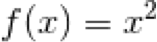 is a function that maps real numbers to real numbers 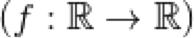. The function is smooth and at every point is differentiable. T

Above Visualisation of the function . With zoom region shown on the right with theorectical tangent line (blue)
The function is continuous and differentiable throughout:This means that at every point of 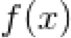 we could draw a tangent line and approximate the gradient. Analytically we can derive the derivative of and this is valid throughout x, the derivative of is 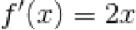 .
If you compare the above function to another function the Rectified Linear Unit (ReLU) function which is used commonly as an activation function. ReLU is also continuous, mapping and so any real number input will yield a real number output. Unlike however this function has parts of it that are non-differentiable. This is clear to see when we zoom in on the function and can see that it is non-smooth (has a sharp corner x=0). Sharp corners are a classic indicator of a non-differential point on a function:
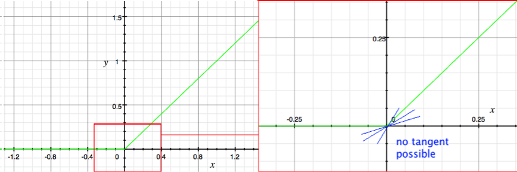Above Visualisation of the ReLU function (green). With zoom region shown on the right with incorrect tangent lines (blue).
At a sharp corner, it is tempting to draw a tangent equally spaced from the two intersecting lines, or to even draw multiple tangents, as though visualising the line rotating round from one line to the other, however these would all be incorrect. At any point, a graph either has a single meaningful gradient (and therefore a tangent) or it does not. At this corner, at the limit, there is no meaningful tangent and so this point of the function is not differentiable. The reason for this is that for a function to be differentiable at every point, its difference quotient must satisfy the following criteria:
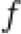 is only differentiable at 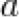 if and only if 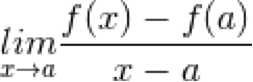 exists.
Where is constant very similar to . If we approach 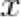 with from the above we can see that the difference quotient tends to infinity which means the tangent at this point does not exist.
If you break in to its components and differentiate it analytically it seems as though it should be fully differentiable:
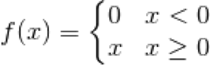
however this is incorrect. The function is not differentiable at zero and one should write the derivative of this function as the following:. In summary, functions which are not smooth throughout, which have sharp corners, will have regions that are not differentiable. Sharp corners cannot have a meaningful tangent placed on them and fail the
Activation functions for deep learning
The classical activation functions tanh and also the logistic sigmoid function are smooth functions throughout, if however you visualise some of the more recently introduced activation functions you will see that they are not smooth and have corners, although they are not differentiable throughout it is easy to find representations of these functions on the internet which suggest they are:
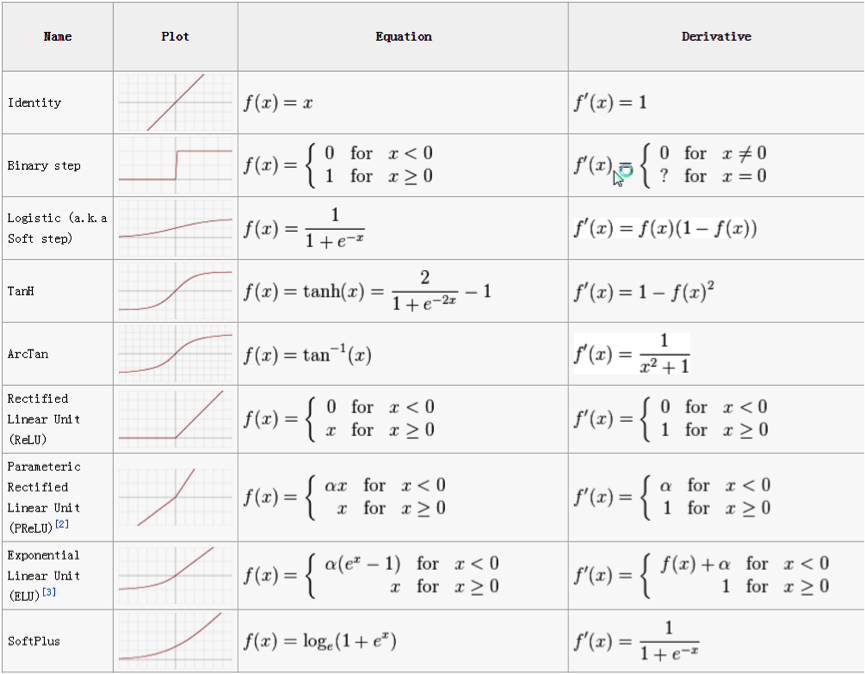Above The activation function derivatives are shown using the conventional notation, despite the fact that some of the functions have points on them which are not differentiable [2].
From the example above [2] the ReLU, and PReLU functions are non-differential despite the notation. The Binary step function is non-differentiable also, but the author of the above figure has indicated so with the line “? for = 0”. So how is this possible? How is that we are using functions which are not fully differentiable for constructing Neural Networks which are composed of many of these functions and which must be differentiable for the training procedure to be performed?
Using activation functions for deep learning which contain non-differentiable points
Functions like ReLU are used in neural networks due to the computational advantages of using these simple equations over more traditional activation functions like tanh or the logistic sigmoid function. The back-propagation algorithm used to optimise neural networks works under the pre-condition that all of the functions contained within the system are differentiable. As discussed ReLU and other variants are non-differentiable at specific points, so how are they used? Essentially, at the points at which they are non-differentiable the function is not evaluated and the output is replaced with a sensible value. For example for ReLU at 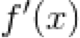 we just specify the output to be zero or one, which is reasonable given our usage. In Theano [3] for example it specified that is not evaluated and taken to be 1 for >= 0. This is not mathematically pure and one could imagine scenarios where this would cause problems, the reality is however that the neural networks that comprise of these functions work well and are stable and so this issue is over-looked in favour of computational efficiency.
Conclusion
Some may argue that if we are just going to specify the output at non-differentiable point anyway, why bother with the extra text and the notation required to explain that this point is not calculable. Others will say that we are abusing notation and that we are over simplifying things for a lay-audience. Well I can understand this from both points of view and from the point of view of succinctness and simplicity it doesn’t often appear, and that is why text like the above can be useful for fully understanding how certain circumstances come about for any interested parties.
References
[1] https://www.amazon.co.uk/Think-About-Analysis-Lara-Alcock/dp/0198723539
[2] https://www.quora.com/Why-do-we-not-use-a-differentiable-approximation-of-ReLUs
[3] https://groups.google.com/forum/#!topic/lasagne-users/_rWsIieuGmA